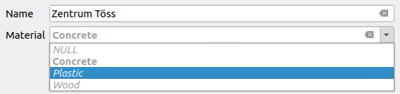
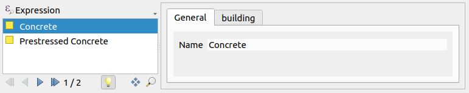
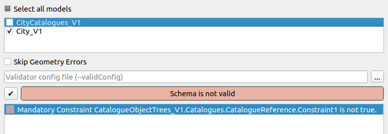
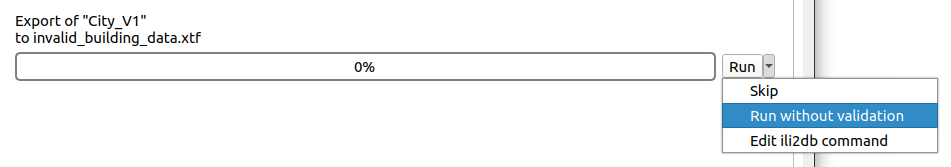

Kataloge und ihre Spezialfälle
Was sind Kataloge und wie werden sie verwendet?
Anstatt statische Aufzählungsdomänen im INTERLIS-Modell zu verwenden, können Kataloge genutzt werden, um Aufzählungswerte nachzuschlagen. Die Katalogstruktur kann im selben Modell oder extern definiert werden, und die (Aufzählungs-)Daten werden in einer INTERLIS-Übertragungsdatei gespeichert. Siehe die Beispiele unten.
Verwendung von Aufzählungsdomänen (Enumeration Domains)
INTERLIS 2.3;
MODEL City_V1 (en)
AT "https://models.opengis.ch"
VERSION "2022-06-22" =
DOMAIN
MaterialType = (
Wood,
Concrete,
Plastic
);
TOPIC Constructions =
OID AS INTERLIS.UUIDOID;
CLASS Building =
Name : TEXT;
Material : MaterialType;
END Building;
END Constructions;
END City_V1.
Das ist super simpel. Aber um der Aufzählung einen neuen Wert hinzuzufügen, muss man das gesamte Modell aktualisieren. Deshalb ziehen Modellierende Kataloge in Betracht.
Werte aus einem Katalog verwenden
INTERLIS 2.3;
MODEL City_V1 (en)
AT "https://models.opengis.ch"
VERSION "2022-06-22" =
IMPORTS CityCatalogues_V1;
TOPIC Constructions =
OID AS INTERLIS.UUIDOID;
DEPENDS ON CityCatalogues_V1.Catalogues;
CLASS Building =
Name : TEXT;
Material : CityCatalogues_V1.Catalogues.MaterialRef;
END Building;
END Constructions;
END City_V1.
Dieses Modell hier nutzt den externen Katalog CityCatalogues_V1, der auf den CatalogueObjects_V1 basiert.
INTERLIS 2.3;
MODEL CityCatalogues_V1 (en)
AT "https://models.opengis.ch"
VERSION "2022-06-22" =
IMPORTS CatalogueObjects_V1;
TOPIC Catalogues =
OID AS INTERLIS.UUIDOID;
CLASS MaterialItem
EXTENDS CatalogueObjects_V1.Catalogues.Item =
Name : MANDATORY TEXT;
END MaterialItem;
STRUCTURE MaterialRef
EXTENDS CatalogueObjects_V1.Catalogues.CatalogueReference =
Reference (EXTENDED) : REFERENCE TO (EXTERNAL) MaterialItem;
END MaterialRef;
END Catalogues;
END CityCatalogues_V1.
Die Werte werden in einer INTERLIS-Transferdatei gespeichert (für Kataloge wird meist immer noch die Dateiendung .xml anstelle von .xtf verwendet).
<?xml version="1.0" encoding="UTF-8"?><TRANSFER xmlns="http://www.interlis.ch/INTERLIS2.3">
<HEADERSECTION SENDER="ili2gpkg-4.6.1-63db90def1260a503f0f2d4cb846686cd4851184" VERSION="2.3"><MODELS><MODEL NAME="CityCatalogues_V1" VERSION="2022-06-2" URI="https://modelbaker.ch"></MODEL></MODELS></HEADERSECTION>
<DATASECTION>
<CityCatalogues_V1.Catalogues BID="b1e196b7-7d1a-4512-a5c2-5f36f52ba2cc">
<CityCatalogues_V1.Catalogues.MaterialItem TID="db473781-7aec-4100-80eb-9b366b05ffe5"><Name>Wood</Name></CityCatalogues_V1.Catalogues.MaterialItem>
<CityCatalogues_V1.Catalogues.MaterialItem TID="e17b72cb-e6fc-4e5e-ad2e-25b1d132b050"><Name>Plastic</Name></CityCatalogues_V1.Catalogues.MaterialItem>
<CityCatalogues_V1.Catalogues.MaterialItem TID="a29e59ff-ab78-43cd-8a0d-9ab64037c4dd"><Name>Concrete</Name></CityCatalogues_V1.Catalogues.MaterialItem>
</CityCatalogues_V1.Catalogues>
</DATASECTION>
</TRANSFER>
Da die Werte nun auf einer Klasse basieren, können zusätzliche Attribute spezifiziert werden. Auf diese Weise können zusätzliche Informationen bereitgestellt und Mehrsprachigkeit unterstützt werden.
Umsetzung
Das von Model Baker erstellte QGIS-Formular sieht im Wesentlichen gleich aus wie bei Aufzählungen.

Note
Wenn Model Baker smart1Inheritance oder smart2Inheritance verwendet und standardmässig der Parameter --coalesceCatalogueRef gesetzt ist, erstellt ili2db die Fremdschlüssel direkt in der Klasse (Building), die auf das Element (MaterialItem) verweist. Dies bedeutet, dass die gemäss der Referenzstruktur (MaterialRef) erstellte Tabelle keine Daten enthält.
Mehrfachauswahl mit BAG OF
Wenn im INTERLIS-Modell BAG OF Attribute verwendet werden, wird die Referenzstruktur MaterialRef als Verknüpfungstabelle umgesetzt.
CLASS Building =
Name : TEXT;
Material : BAG {1..*} OF CityCatalogues_V1.Catalogues.MaterialRef;
END Building;
Model Baker verwendet dafür ein Beziehungseditor-Widget (Relation Editor Widget).

Warning
Beim Importieren der Modelle mit --schemaimport solltest du das Katalogmodell CityCatalogues_V1 bei Verwendung von BAG OF niemals zuerst importieren. Der Grund dafür ist, dass in diesem Fall die auf der Referenzstruktur MaterialRef basierende Tabelle nicht mit einem Fremdschlüssel auf die auf der Klasse Building basierende Tabelle erstellt werden kann, da das Modell noch nicht importiert ist. Beim Import von City_V1 wird CityCatalogues_V1 jedoch von ili2db sauber via Abhängigkeit mitimportiert.
Zu welchen Baskets gehören diese Daten?
Bei der Verwendung von Behältern, wie hier beschrieben, kann Unklarheit darüber entstehen, wo in der physischen Datenbank die Daten der Verknüpfungstabelle MaterialRef zugeordnet werden sollen. Obwohl die Struktur MaterialRef im Thema des Katalogs definiert ist, sind die Daten nicht "Teil" der Katalogdaten. Darüber müssen wir uns jedoch keine Sorgen machen: Da eine STRUCTURE (wie MaterialRef) nicht eigenständig existieren kann und immer Teil ihres Besitzerobjekts (in unserem Fall Building) ist, spielt es keine Rolle, was in der Spalte t_basket eingetragen ist. Es wird ohnehin als Teil des Building-Objekts exportiert (und validiert).
Verwendung von Baumkatalogen (Tree Catalogues)
Du findest auch Modelle, die CatalogueObjectTrees_V1 verwenden. Dies bedeutet, dass die Katalogwerte in einer Baumstruktur gespeichert sind:
├── Concrete
│ ├── Reinforced Concrete
│ └── Prestressed Concrete
└── Wood
├── Oak
├── Teak
└── Birch
Das externe Katalogmodell sieht wie folgt aus:
INTERLIS 2.3;
MODEL CityCatalogues_V1 (en)
AT "https://models.opengis.ch"
VERSION "2022-06-22" =
IMPORTS CatalogueObjectTrees_V1;
TOPIC Catalogues =
OID AS INTERLIS.UUIDOID;
CLASS MaterialItem
EXTENDS CatalogueObjectTrees_V1.Catalogues.Item =
Name : MANDATORY TEXT;
END MaterialItem;
STRUCTURE MaterialRef
EXTENDS CatalogueObjectTrees_V1.Catalogues.CatalogueReference =
Reference (EXTENDED) : REFERENCE TO (EXTERNAL) MaterialItem;
END MaterialRef;
END Catalogues;
END CityCatalogues_V1.
Und die Daten sehen so aus:
<?xml version="1.0" encoding="UTF-8"?><TRANSFER xmlns="http://www.interlis.ch/INTERLIS2.3">
<HEADERSECTION SENDER="ili2gpkg-4.6.1-63db90def1260a503f0f2d4cb846686cd4851184" VERSION="2.3"><MODELS><MODEL NAME="CityCatalogues_V1" VERSION="2022-06-2" URI="https://modelbaker.ch"></MODEL></MODELS></HEADERSECTION>
<DATASECTION>
<CityCatalogues_V1.Catalogues BID="b1e196b7-7d1a-4512-a5c2-5f36f52ba2cc">
<CityCatalogues_V1.Catalogues.MaterialItem TID="a29e59ff-ab78-43cd-8a0d-9ab64037c4dd"><IsSuperItem>true</IsSuperItem><IsUseable>false</IsUseable><Name>Concrete</Name></CityCatalogues_V1.Catalogues.MaterialItem>
<CityCatalogues_V1.Catalogues.MaterialItem TID="db473781-7aec-4100-80eb-9b366b05ffe5"><IsSuperItem>false</IsSuperItem><IsUseable>true</IsUseable><Parent REF="a29e59ff-ab78-43cd-8a0d-9ab64037c4dd"></Parent><Name>Reinforced Concrete</Name></CityCatalogues_V1.Catalogues.MaterialItem>
<CityCatalogues_V1.Catalogues.MaterialItem TID="e17b72cb-e6fc-4e5e-ad2e-25b1d132b050"><IsSuperItem>false</IsSuperItem><IsUseable>true</IsUseable><Parent REF="a29e59ff-ab78-43cd-8a0d-9ab64037c4dd"></Parent><Name>Prestressed Concrete</Name></CityCatalogues_V1.Catalogues.MaterialItem>
</CityCatalogues_V1.Catalogues>
</DATASECTION>
</TRANSFER>
Je nach Modellierung können Elemente der ersten Ebene nutzbar sein oder nicht.
Note
Aufzählungen können ebenfalls als Bäume strukturiert sein.
Spezialfall beim Exportieren / Validieren von Daten mit baumstrukturierten Katalogen
Es ist nicht möglich, Daten mit Validierung aus einem Modell zu exportieren, das Codelisten mit CatalogueObjectTrees_V1 verwendet, ohne auch die Katalogdaten zu exportieren.

Grund
In der Klasse CatalogueReference von CatalogeObjectTrees_V1 gibt es eine Bedingung (Constraint):
MANDATORY CONSTRAINT
Reference->IsUseable;
Da der Inhalt von CatalogueReference Teil der Benutzerdaten ist. Die Information, ob diese Referenz nutzbar (usable) ist, befindet sich jedoch in den Katalogdaten. Daher können die Benutzerdaten nicht erfolgreich validiert exportiert werden, wenn die Katalogdaten nicht ebenfalls exportiert werden.
Lösung
Du musst deine Daten zusammen mit den Katalogdaten exportieren/validieren, oder deine Daten im Validator prüfen und anschliessend ohne Validierung exportieren – beachte jedoch, dass deine Transferdateidaten danach invalide sein werden.

Note
Im INTERLIS 2.4-Modell CatalogueObjectTrees_V2 wird dieses Problem gelöst.